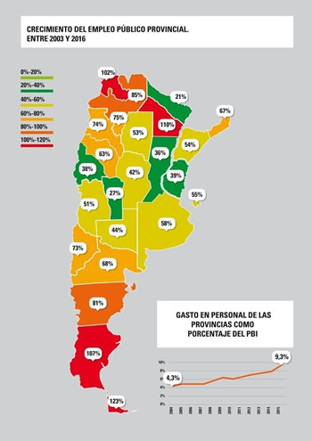
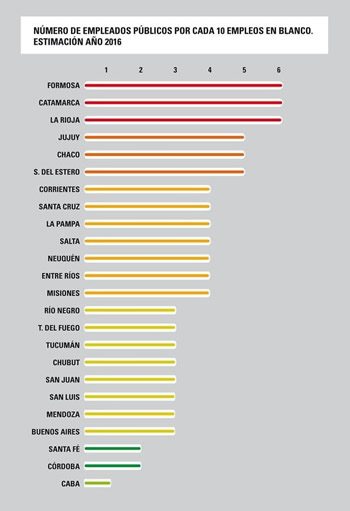
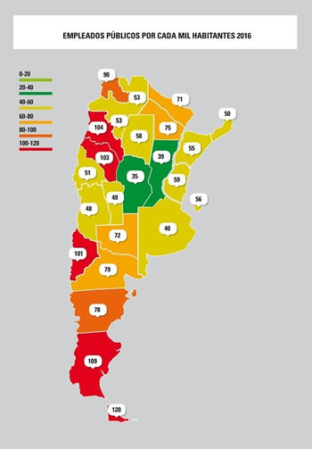
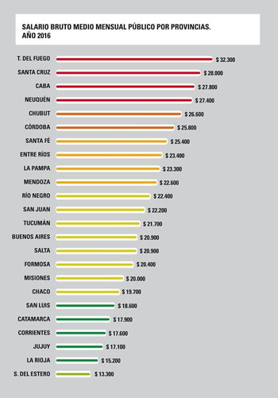

Real Chubut - Agencia de Noticias


En 14 años, el empleo público en las provincias creció un 40% más que la población
Un informe del Ministerio de Hacienda al que accedió Infobae habla de un crecimiento "explosivo" entre 2003 y 2016. Cómo es la situación provincia por provincia.
Un crecimiento "explosivo". Con ese adjetivo, el Gobierno busca describir lo que sucedió con el empleo público en las provincias en los últimos años. Es que un crecimiento sin control y que varía según dónde se ponga la lupa llevó a un diagnóstico similar. Mientras que el empleo público creció un 59% entre 2003 y 2016, la población aumentó un 17,5% en ese período.
"Esta expansión del empleo público es difícil de justificar", subraya el Ministerio de Hacienda en un informe interno al que tuvo acceso Infobae, y que se elaboró con datos oficiales del Indec y del Ministerio de Trabajo para que con cuatro gráficos se tenga un pantallazo de la situación a la hora de negociar con provincias una futura ley de responsabilidad fiscal.
Como el empleo público en las provincias creció un 41,5% más que la población, este escenario casi duplicó el gasto en personal: pasó del 4,3% del PBI al 9,3 por ciento. El crecimiento del empleo público en los últimos 14 años cambia según las provincias, pero todas crecieron por encima de su población. Hacia delante, el Gobierno buscará limitar este crecimiento para que no se genere el combo no deseado entre menor inversión pública y mayor presión fiscal.
Por ejemplo, las plantillas se duplicaron en Chaco (110%), Tierra del Fuego (107%) y Jujuy (102%). A contramano, las provincias donde menos aumentaron son Formosa (21%), San Luis (27%) y Santa Fe (36%).

El crecimiento se analiza a través del gasto en personal de las provincias.
El Gobierno busca que, a partir de ahora, el empleo en las provincias aumente a la misma tasa que el crecimiento demográfico. "Se necesitan policías, bomberos, maestros o administrativos en el Estado de cada provincia según crezca la población; ni más ni menos", explican desde el Ministerio de Hacienda, a cargo de Nicolás Dujovne.
Pero la realidad es que este crecimiento del empleo público también dejó una estructura difícil de desarmar a la hora de comparar con el sector privado por dos motivos: cuántos empleados dependen del Estado y qué sueldo cobran. Y si bien Formosa es una de las provincias en donde menos creció el empleo público el año pasado, tiene seis empleados públicos por cada 10 empleos en blanco registrados, sin contar a municipales.

Formosa, Catamarca y La Rioja encabezan el ranking de empleo público provincial.
El próximo gráfico del informe al que accedió Infobae muestra la cantidad de empleados públicos cada mil habitantes. Una vez más, la situación es diferente según la provincia que se mire, y el semáforo se vuelve a aplicar según la situación específica de cada una.
Santa Cruz, Tierra del Fuego, Catamarca y La Rioja son el rojo en este semáforo de empleo público provincial: el Estado tiene más de 100 empleados por cada 1.000 habitantes, según las últimas proyecciones realizadas en 2016. Córdoba y Santa Fe se ubican en el verde del semáforo, con 35 y 39 empleados públicos por cada 1000 habitantes respectivamente.

Cara a cara con el sector privado
Con todo, el principal inconveniente que tuvieron las provincias fue financiar este gasto. Y hay otro factor que, según el Gobierno, hace que "el esfuerzo fiscal del exceso de empleo público se convierta en una dificultad mayor". El salario bruto mensual medio por provincias se encuentra por encima de lo que se paga en el sector privado.
Santa Cruz, que hace poco tuvo que firmar un salvataje económico con el gobierno nacional porque no podía pagar salarios, posee uno de los sueldos más altos en el empleo público: 28.000 pesos por mes en promedio. "Si se tiene en cuenta que el sector público paga mejor en casi todas las jurisdicciones, el esfuerzo fiscal del exceso del empleo público es mayor", continúa el reporte.

Para que haya una ley de responsabilidad fiscal luego de las elecciones legislativas de octubre, Dujovne viaja a las provincias para reunirse con los gobernadores para avanzar sobre este tema. El miércoles de la próxima semana se reunirá con Gustavo Bordet, gobernador de Entre Ríos.
El objetivo con todas las provincias es congelar el empleo público al limitar las contrataciones. El 3% de la planta se jubila en promedio cada año, y a partir de ese número, buscarán reducir las contrataciones también con un esquema de 2×1.
También se prevé un esquema de premios y castigos para recompensar a aquellos gobernadores que ajusten sus déficits y emplazar a aquellos distritos que no cuenten con un ordenamiento en sus cuentas para evitar un mayor gasto corriente. Si se encuentran en déficit, el objetivo es que mantengan el gasto primario constante en términos reales.
Poner la lupa sólo sobre el sector público para solucionar esta problemática dejaría de lado una realidad: hay sólo 15 empresas privadas cada 1.000 habitantes en el promedio nacional, de acuerdo a un estudio que publicó la consultora Noanomics. Formosa, Jujuy y La Rioja tienen la menor cantidad de empresas en esa relación, y son provincias con un importante peso de empleo público.
Fuente: Infobae